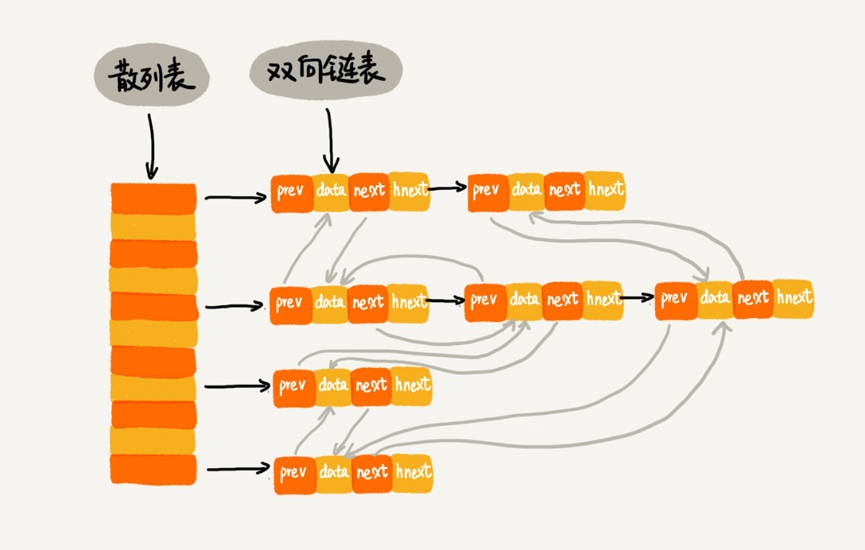
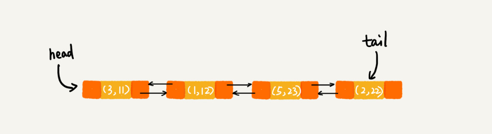
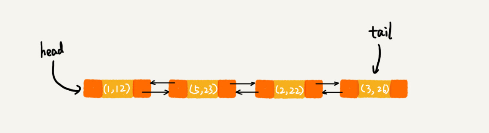
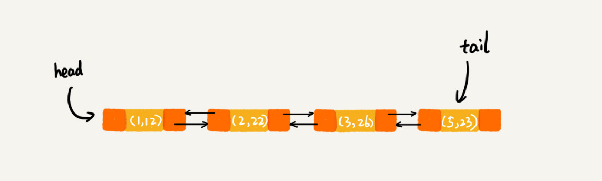

一、为什么散列表和链表经常放在一起使用?
- 散列表的优点：支持高效的数据插入、删除和查找操作
- 散列表的缺点：不支持快速顺序遍历散列表中的数据
- 如何按照顺序快速遍历散列表的数据？
只能将数据转移到数组，然后排序，最后再遍历数据。- 我们知道散列表是动态的数据结构，需要频繁的插入和删除数据，那么每次顺序遍历之前都需要先排序，这势必会造成效率非常低下。
- 如何解决上面的问题呢？
就是将散列表和链表（或跳表）结合起来使用。
二、散列表和链表如何组合起来使用?
LRU （Least Recently Used）缓存淘汰算法
- LRU缓存淘汰算法主要操作有哪些？主要包含3个操作:
① 往缓存中添加一个数据；
② 从缓存中删除一个数据；
③ 在缓存中查找一个数据；
总结：上面3个都涉及到查找。
- 如何用链表实现
LRU缓存淘汰算法？
① 需要维护一个按照访问时间从大到小的有序排列的链表结构。
② 缓冲空间有限，当空间不足需要淘汰一个数据时直接删除链表头部的节点。
③ 当要缓存某个数据时，先在链表中查找这个数据。若未找到，则直接将数据放到链表的尾部。若找 到，就把它移动到链表尾部。
④ 前面讲到，LRU缓存的3个主要操作都涉及到查找，若单纯由链表实现，查找的时间复杂度很高为$O(n)$。若将链表和散列表结合使用，查找的时间复杂度会降低到$O(1)$。
- 如何使用散列表和链表实现
LRU缓存淘汰算法？
① 使用双向链表存储数据，链表中每个节点存储数据（data）、前驱指针（prev）、后继指针（next）和hnext指针（解决散列冲突的链表指针）。
② 散列表通过链表法解决散列冲突，所以每个节点都会在两条链中。一条链是双向链表，另一条链是散列表中的拉链。前驱和后继指针是为了将节点串在双向链表中，hnext指针是为了将节点串在散列表的拉链中。
LRU缓存淘汰算法的3个主要操作如何做到时间复杂度为$O(1)$呢？
首先，我们明确一点就是链表本身插入和删除一个节点的时间复杂度为$O(1)$，因为只需更改几个指针指向即可。
接着，来分析查找操作的时间复杂度。当要查找一个数据时，通过散列表可实现在$O(1)$时间复杂度找到该数据，再加上前面说的插入或删除的时间复杂度是$O(1)$，所以我们总操作的时间复杂度就是$O(1)$。
Redis有序集合
- 什么是有序集合？
① 在有序集合中，每个成员对象有2个重要的属性，即key（键值）和score（分值）。
② 不仅会通过score来查找数据，还会通过key来查找数据。
- 有序集合的操作有哪些？
举个例子，比如用户积分排行榜有这样一个功能：可以通过用户ID来查找积分信息，也可以通过积分区间来查找用户ID。
这里用户ID就是key，积分就是score。所以，有序集合的操作如下：
① 添加一个对象；
② 根据键值删除一个对象；
③ 根据键值查找一个成员对象；
④ 根据分值区间查找数据，比如查找积分在[100,356]之间的成员对象；
⑤ 按照分值从小到大排序成员变量。
这时可以按照分值将成员对象组织成跳表结构，按照键值构建一个散列表。
那么上面的所有操作都非常高效。
Java LinkedHashMap
HashMap底层是通过散列表这种数据结构实现的。而LinkedHashMap前面比HashMap多了一个“Linked”，这里的“Linked”是不是说，LinkedHashMap是一个通过链表法解决散列冲突的散列表呢？
实际上，LinkedHashMap并没有这么简单，其中的“Linked”也并不仅仅代表它是通过链表法解决散列冲突的。关于这一点，在我是初学者的时候，也误解了很久。
先来看一段代码。你觉得这段代码会以什么样的顺序打印
3，1，5，2这几个key呢？原因又是什么呢？
1 | HashMap<Integer, Integer> m = new LinkedHashMap<>(); |
先告诉你答案，上面的代码会按照数据插入的顺序依次来打印，也就是说，打印的顺序就是
3，1，5，2。你有没有觉得奇怪？散列表中数据是经过散列函数打乱之后无规律存储的，这里是如何实现按照数据的插入顺序来遍历打印的呢？
可能你已经猜到了，LinkedHashMap也是通过散列表和链表组合在一起实现的。实际上，它不仅支持按照插入顺序遍历数据，还支持按照访问顺序来遍历数据。你可以看下面这段代码：
1 | // 10 是初始大小，0.75 是装载因子，true 是表示按照访问时间排序 |
这段代码打印的结果是
1，2，3，5。
这里分析一下，为什么这段代码会按照这样顺序来打印。
每次调用put()函数，往LinkedHashMap中添加数据的时候，都会将数据添加到链表的尾部，所以，在前四个操作完成之后，链表中的数据是下面这样：
在第8行代码中，再次将键值为3的数据放入到LinkedHashMap的时候，会先查找这个键值是否已经有了，然后，再将已经存在的(3,11)删除，并且将新的(3,26)放到链表的尾部。所以，这个时候链表中的数据就是下面这样：
当第9行代码访问到key为5的数据的时候，我们将被访问到的数据移动到链表的尾部。所以，第9行代码之后，链表中的数据是下面这样：
所以，最后打印出来的数据是1，2，3，5。从上面的分析，你有没有发现，按照访问时间排序的LinkedHashMap本身就是一个支持LRU缓存淘汰策略的缓存系统？实际上，它们两个的实现原理也是一模一样的。
总结一下，实际上，LinkedHashMap是通过双向链表和散列表这两种数据结构组合实现的。LinkedHashMap中的“Linked”实际上是指的是双向链表，并非指用链表法解决散列冲突。
三、思考
- 上面的几个散列表和链表组合的例子里，都是使用双向链表。如果把双向链表改成单链表，还能否正常工作？为什么呢？
在删除一个元素时，虽然能 $O(1)$ 的找到目标结点，但是要删除该结点需要拿到前一个结点的指针，遍历到前一个结点复杂度会变为 $O(n)$，所以用双链表实现比较合适。
（但其实硬要操作的话，单链表也是可以实现 $O(1)$ 时间复杂度删除结点的）。
- 假设猎聘网有
10万名猎头，每个猎头可以通过做任务（比如发布职位）来积累积分，然后通过积分来下载简历。假设你是猎聘网的一名工程师，如何在内存中存储这10万个猎头的ID和积分信息，让它能够支持这样几个操作：
1） 根据猎头ID查收查找、删除、更新这个猎头的积分信息；
2） 查找积分在某个区间的猎头ID列表；
3） 查找按照积分从小到大排名在第x位到第y位之间的猎头ID列表。以积分排序构建一个跳表，再以猎头
ID构建一个散列表。
1）ID在散列表中所以可以 $O(1)$ 查找到这个猎头；
2）积分以跳表存储，跳表支持区间查询；
总结
到目前文章为止，个人感觉其实就两种数据结构，链表和数组。
- 数组占据随机访问的优势，却有需要连续内存的缺点。
- 链表具有可不连续存储的优势，但访问查找是线性的。
- 散列表和链表、跳表的混合使用，是为了结合数组和链表的优势，规避它们的不足。
- 我们可以得出数据结构和算法的重要性排行榜：连续空间 > 时间 > 碎片空间。


评论加载中